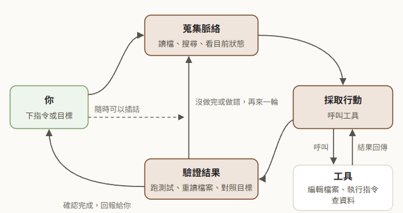

AI Agent 筆記
開始用 Claude Code、Codex 這類 AI 代理工具之前，先弄懂它怎麼運作、怎麼設定，以及哪些事要自己把關。
Claude、Codex 與 AI 代理工具的整理筆記

你是不是卡在這裡
每次開新對話都要重講一次
上次做到哪，能不能讓它自己記得？
先看 session_log 加 SessionStart hook 的接力做法，要直接套用就裝工作流 template。
怕它改壞檔案
讓 AI 代理動我的電腦，出事了怎麼退回？
先看沙箱各層擋什麼，再看哪些改動能用 /rewind 退回、哪些要靠 Git。
在整套論文流程的哪一站
論文指南每一站該怎麼做，都有一頁說明- 找題目thesis-toolkit
- 讀文獻論文筆記庫範本
- 設計與分析論文筆記庫範本
- 寫論文thesis-toolkit
- 口試與修訂md-to-slides
每一站都用得到的 AI 工作環境Claude Code 工作流 templateAI Agent 筆記你在這裡
怎麼開始
本站不用安裝，直接讀。還沒裝過 Claude Code 或 Codex，先照論文指南的一小時上手裝好，再回來看新手指令速查和Claude Code 設定總覽。想把論文工作環境一次裝好，用論文指南的整套安裝。
閱讀前請先注意
這是個人整理筆記，不是官方文件；工具與方案變動很快，每頁標註查證日期，請以官方最新說明為準。
01先搞懂工具
Claude、ChatGPT、Codex 各種介面差在哪、免費能做到哪裡
02AI Agent 原理
代理怎麼運作、擴充機制是什麼
AI Agent 怎麼運作
代理迴圈、工具呼叫與上下文
SKILL、Plugin、MCP 與 Subagent
四種擴充機制各自解決什麼問題
Mods：在 Claude Code 裡加自己的功能
事件、hook 與 mods API 怎麼運作，以 TODO 側欄當實例
Subagent 入門與實戰
frontmatter 全欄位、background／isolation: worktree 實際行為、SendMessage 續問、多代理成本
MCP 入門與實戰
五分鐘裝好第一個、scope／OAuth 怎麼選、Windows 踩坑實錄
好用工具清單
精選審查過的官方文章、skill、plugin、MCP 與學習資源
把 AI 代理的工作環境設計得可靠
官方 harness 原則、驗證分級、多代理成本
03實戰協作
多個 AI 工具怎麼分工
04軟體開發流程 SDLC
傳統開發流程，以及 AI 代理加入後的變化
05官方建議設定
只整理官方文件的建議寫法
06隔離與沙箱
讓 agent 放手做事之前，WSL2 與沙箱怎麼疊、怎麼驗
07關於
網站定位與更新紀錄
同一套的工具
網站論文指南研究方法、論文寫作和口試，每一站該怎麼做的說明。
Claude Code 外掛thesis-toolkit幫你收斂題目、稽核研究問題、檢查學術寫法的 SKILL。
Obsidian 範本論文筆記庫範本文獻筆記、構念卡和假說推導放在同一個筆記庫，寫第二、三章時直接取材。
簡報工具md-to-slides用 Markdown 寫簡報，挑場合和主題就有一份範例可以改。
Claude Code 設定Claude Code 工作流 template開場接上次進度，產出交給另一個 agent 驗收，論文跨很多 session 也不會斷。
網站AI Agent 筆記Claude、Codex 這類 AI 代理工具的概念、設定和協作方式。你在這裡